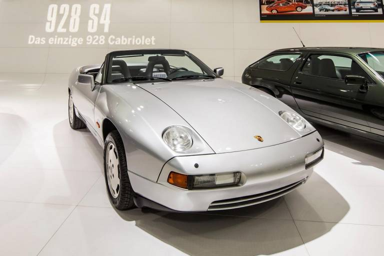
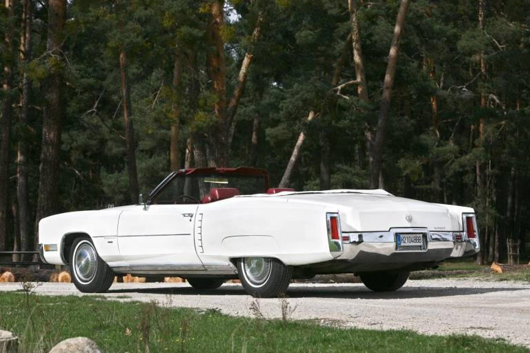
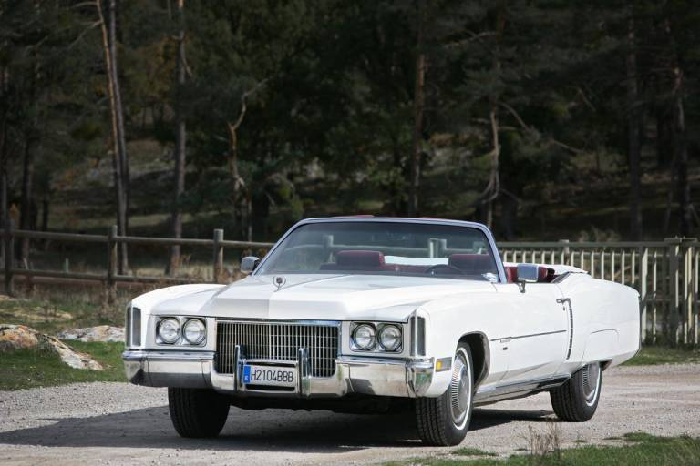
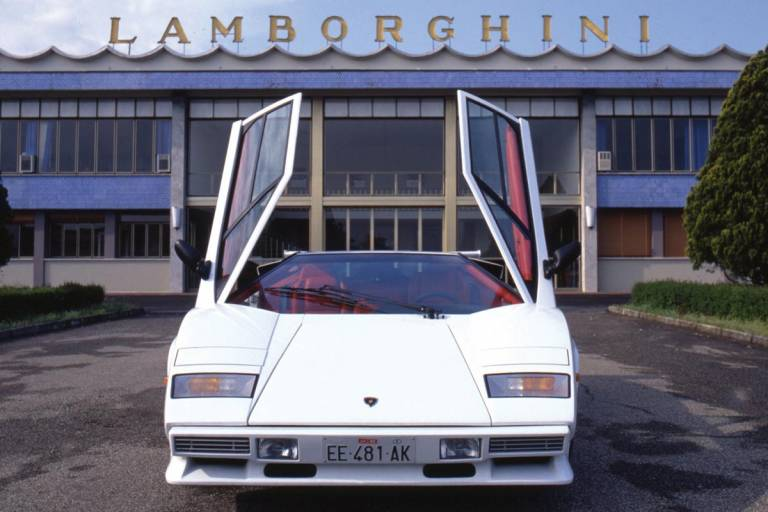
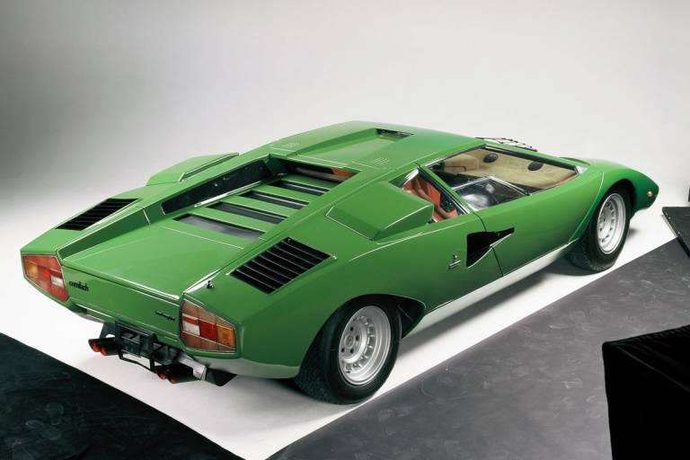
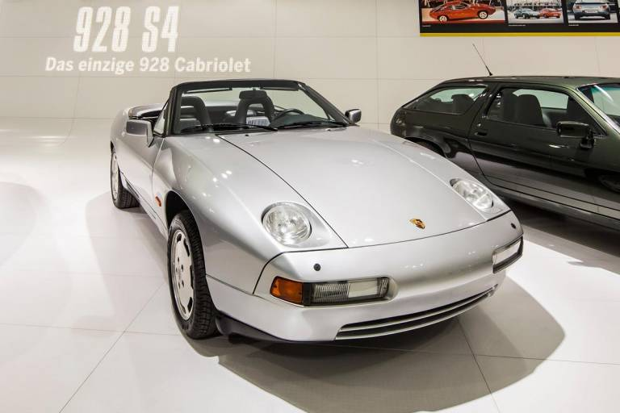
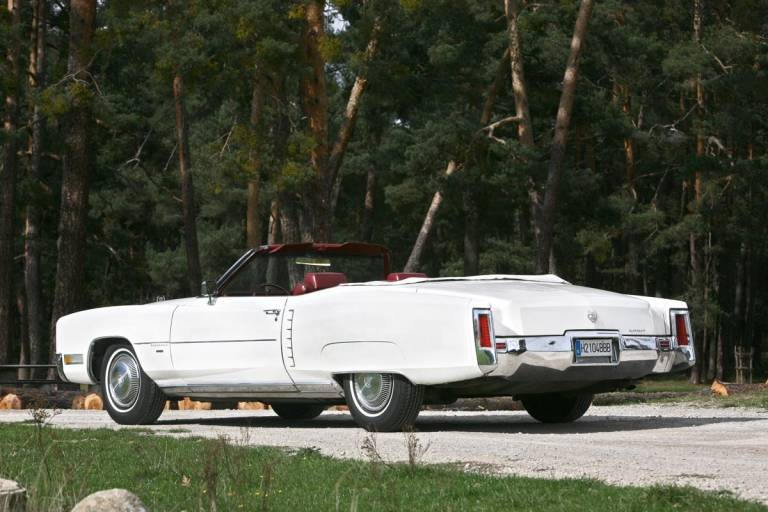
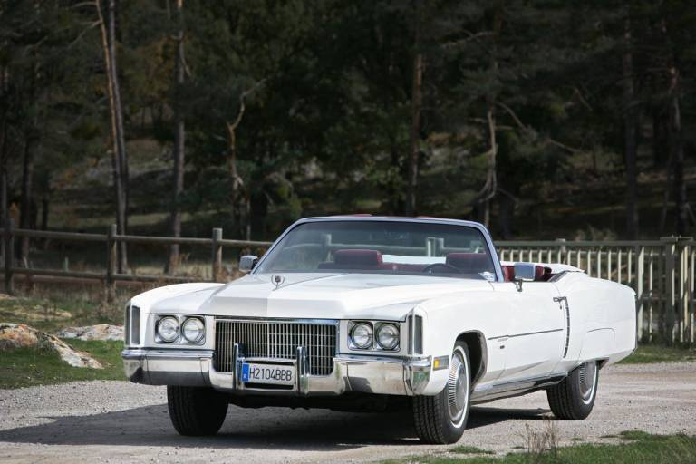
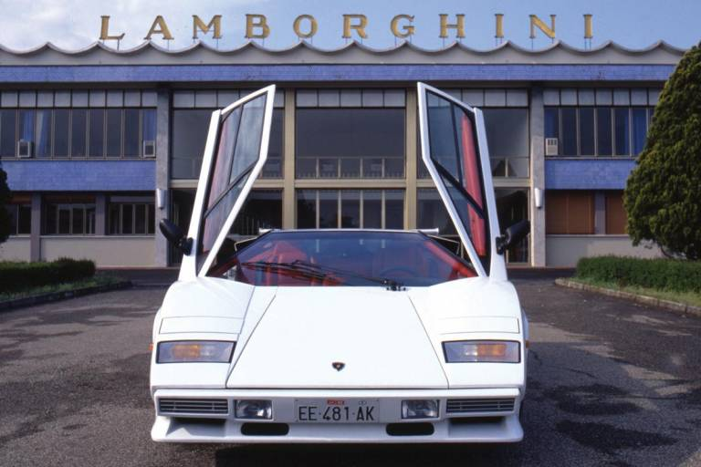
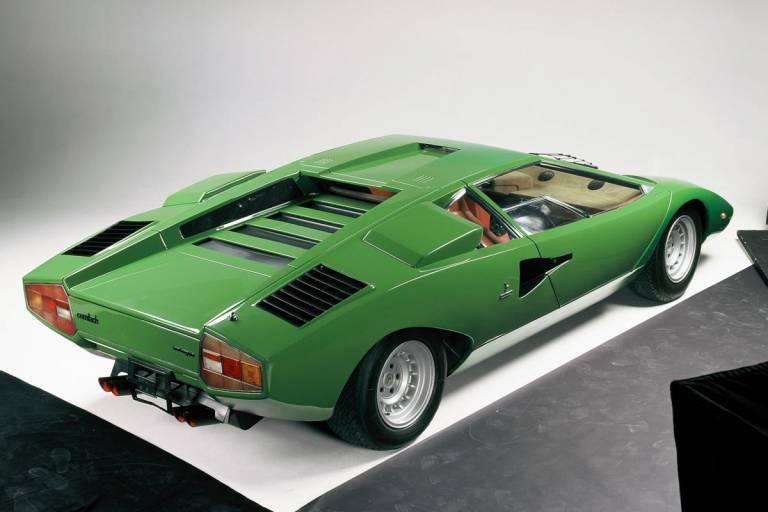

<
>
Una excelente forma de explorar Nueva Zelanda es en automóvil. De esta forma, tenés la flexibilidad de diseñar tu itinerario a medida que avanzas y la libertad de explorar lugares que están alejados de los senderos de turistas habituales. Por lo general, las rutas son de muy buena calidad. Todas las rutas principales están selladas y señalizadas; y, fuera de las ciudades, el tráfico es liviano.
Las empresas de alquiler de automóviles son de todas las formas y tamaños. Encontrarás todos los nombres importantes, así como también gran variedad de operadores locales. En la mayoría de los casos, cuanto mayor sea la duración del alquiler, menor será la tarifa diaria. Si necesitás alquilar un automóvil solo para el viaje de ida, elegí las empresas más grandes.
Podés manejar legalmente en Nueva Zelanda durante un máximo de 12 meses si tenés una licencia vigente para conducir de tu país de origen o un permiso de conducir internacional (International Driving Permit, IDP). (Nota: Si la licencia o el permiso internacional no están en inglés, debés tener una traducción válida. Consultá NZ Transport Agency para obtener más información). Por lo general, debés tener 21 años o más para alquilar un automóvil en Nueva Zelanda.
 










Antes de que definas tu viaje a Nueva Zelanda, asegúrate de saber qué esperar. Conducir en Nueva Zelanda puede ser distinto de lo que estás habituado, desde las normas y las costumbres hasta las condiciones de la carretera.

Reservá un vuelo a Nueva Zelanda por Internet o a través de tu agencia de viajes local y vas a disfrutar de paisajes impresionantes.

La clave para no tener problemas para ingresar a Nueva Zelanda es contar con una visa y un pasaporte vigentes. Lea más sobre los requisitos de inmigración.

Las agencias de viajes que se mencionan acá te pueden ayudar a planear y reservar tu viaje a Nueva Zelanda, ya sea que dependas de un presupuesto limitado o que desees experimentar unas vacaciones de lujo.

Cruising in New Zealand is the perfect way to explore over 15,000 kilometres of coastline and the spectacular landscapes this diverse country has to offer.

Ofertas especiales de tours, actividades, hoteles y mucho más para que puedas experimentar lo mejor de Nueva Zelanda.

Aquí tienes una guía rápida de los aeropuertos de Nueva Zelanda y las líneas aéreas que llegan al país y sus alrededores.
Compartir página.
Copyright © Todos los Derechos Reservados, creado desde 0 por Two Deax.